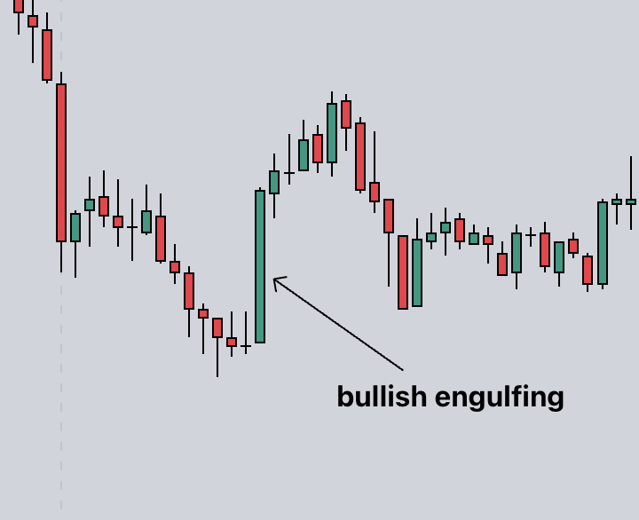
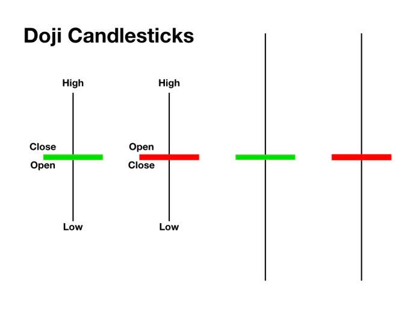

A chart can be looked at in many different forms. You can see the normal line chart, candlestick charts, renko, and so on. A line chart will show you the general direction a market has gone toward. But you can't see the whole history of where price went in detail.
Candlestick charts show more detail of where price went when looking at the chart. You can look at a chart in different times as well. A candlestick shows the high and low points that price reached within that set time, as well as where price officially opened and closed.
Candlesticks are a pretty general topic, but knowing how to read them and see what they're doing and react to those actions in the live market will make you more aware as a trader of what's currently going on.
As candlesticks print, you may see certain patterns forming on the charts as well. When these patterns occur while the chart may be in an area of interest, this can add confluence and more probability to a trade playing out in your favor.
Engulfing candles can be recognized when you have one candle that pushes past the price of two or three previous candles. Fully 'engulfing' them.
Dojis are candles that form when price is stagnant. Buyers and Sellers are not stronger than one another in this instance.
